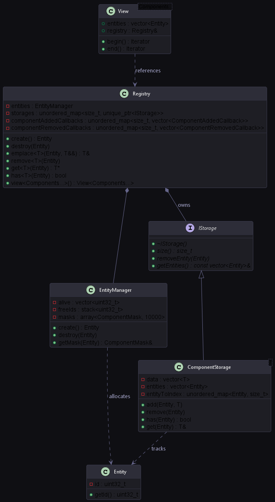

This document provides a technical deep-dive into the engine's custom, header-only Entity-Component System (ECS). The ECS is designed from scratch to prioritize cache locality, fast component lookups, generational entity recycling, and compile-time template queries.

ECS Structure
Entity Allocation & Recycling
The Entity class is a simple 32-bit wrapper around an integer identifier (uint32_t). To prevent fragmentation and maintain strict bounds, entity lifetime is governed by the EntityManager.
- Max Entities: The system caps the active entity list to 10,000 (defined by MAX_ENTITIES).
- Recycling Queue: Free entity IDs are stored in a std::stack<uint32_t>. When an entity is destroyed, its ID is recycled back to the stack, making it available for subsequent allocations.
- Component Mask: The EntityManager allocates an array of 64-bit masks (std::bitset<64> ComponentMask). Each bit represents whether an entity owns a specific component type.
ComponentStorage & The Swap-Remove Pattern
Components are pure data structures with no behavior. To avoid CPU cache misses, components are stored contiguously in memory inside ComponentStorage.hpp.
template<typename T>
private:
};
Template class storing components contiguously in memory for optimal cache usage.
Definition ComponentStorage.hpp:41
std::unordered_map< Entity, size_t > entityToIndex
Mapping for quick entity component lookup.
Definition ComponentStorage.hpp:150
std::vector< Entity > entities
Entity mapping matching data array order.
Definition ComponentStorage.hpp:148
Polymorphic base interface for all component storage types, allowing untyped manipulation of componen...
Definition ComponentStorage.hpp:12
tag text data
Definition ufbx.cpp:7532
The Swap-Remove Mechanics
When a component is removed from an entity, removing from a middle index in a std::vector would shift all subsequent elements, which is an (O(N)) cost.
To achieve (O(1)) deletion while maintaining a dense, contiguous array, the storage implements the Swap-Remove (or swap-and-pop) pattern:
- Locate the index of the component to delete via the entityToIndex map.
- Swap this component with the last component in the vector.
- Swap the corresponding entry in the parallel entities vector.
- Update the swapped entity's index in the entityToIndex map to its new position.
- Call .pop_back() on both vectors to remove the target component in (O(1)).
This keeps data perfectly aligned, contiguous, and packed tight in RAM, ensuring maximum CPU cache efficiency during serial updates.
Event Subscriptions
The Registry allows systems to subscribe to events when components are added or removed:
using ComponentAddedCallback = std::function<void(
Entity)>;
using ComponentRemovedCallback = std::function<void(
Entity)>;
Lightweight identifier representing a game object in the Entity Component System.
Definition Entity.hpp:11
This is heavily utilized in RenderSystem.hpp to automatically manage the rendering queues. When a Mesh, Transform, or Material component is added to an entity, the system caches it. When any of these components are removed, the entity is evicted from the renderer cache:
registry.subscribeToAdded<
Mesh>([
this](
Entity e) { checkAndAdd(e); });
registry.subscribeToRemoved<
Mesh>([
this](
Entity e) { removeEntity(e); });
Represents a mesh component that holds geometry data and its Vulkan buffers.
Definition Mesh.hpp:95
Compile-Time Multi-Component Views
The most powerful feature of the custom ECS is the Registry::view<Components...>() query. It extracts a view of entities possessing the specified subset of components.
Optimization: Smallest Pool Heuristic
To search for entities with components A, B, and C, iterating through all entities in the engine would be highly inefficient.
Instead, the Registry queries the size of each component pool and picks the smallest storage pool as the driver. It then iterates through that pool and filters out entities that do not contain the remaining components:
template<typename First, typename Second, typename... Rest>
IStorage* b = getSmallestStorage<Second, Rest...>();
if (!a) return b;
if (!b) return a;
}
virtual size_t size() const =0
Returns the number of component instances stored.
Iterator Structured Binding Support
The view provides standard C++ Iterators, allowing systems to use simple range-based for loops with structured bindings:
}
Represents a camera component for rendering and viewing.
Definition Camera.hpp:14
Structure of Arrays (SoA) Optimizations
To push performance even further for bulk operations (like updating transforms or uploading mesh buffers to the GPU), the engine implements a Structure of Arrays (SoA) memory layout in the soa/ directory.
Unlike Array of Structures (AoS), where each entity holds a packed struct of positions, rotations, scales:
};
std::vector<Transform> transforms;
double scale
Definition ufbx.cpp:26002
The SoA layout decomposes these fields into separate vectors inside TransformSoA.hpp and MeshSoA.hpp:
std::vector<glm::vec3>
scales;
};
CPU Cache Line Visual Comparison
Array of Structures (AoS) - Cache Line Pollution:
+-----------------------------------------------------------+
| Entity 0 (Pos) | Entity 0 (Color) | Entity 0 (Name) | ... |
+-----------------------------------------------------------+
(When updating positions, the CPU cache line is polluted with unused Colors and Names, wasting memory bandwidth).
Structure of Arrays (SoA) - Cache Friendly:
+-----------------------------------------------------------+
| Position 0 | Position 1 | Position 2 | ... |
+-----------------------------------------------------------+
(Cache lines contain ONLY position data, guaranteeing a 100% cache hit rate during bulk updates).
Benefits of SoA in the Engine
- VRAM Upload Efficiency: The MeshSoA stores vertex and index buffers contiguously, making bulk VRAM uploads via staging buffers highly streamable.
- Vectorization (SIMD): Separate arrays allow modern compilers to auto-vectorize mathematics (like updating positions, physics, or computing bounding matrices), since elements are packed contiguously in cache lines with zero stride.
- Dynamic Allocations: The GPU instancing system reads from CPU-side InstanceDataSoA models, colors, and material IDs to batch upload GPU instance arrays in a single vkCmdDrawIndexed queue preparation loop.
Example Usage Code (Registry & Views)
Below is an example showing how to create entities, attach components, and query them using views:
registry.
emplace<
Mesh>(player, PrimitiveFactory::createCube());
transform.position.y += 1.0f * dt;
}
Coordinates entities and components, providing creation, removal, lookup, and views.
Definition Registry.hpp:30
Entity create()
Creates a new entity.
Definition Registry.hpp:46
auto view()
Generates a filtered view of entities containing the requested components.
Definition Registry.hpp:279
T & emplace(Entity e, T &&comp)
Emplaces a component on an entity.
Definition Registry.hpp:106
Component that assigns a user-friendly name to an entity.
Definition Name.hpp:9
 1.17.0
1.17.0